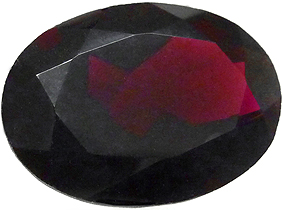

le grenat almandin
Système cristalin : cubique
Indice de réfraction : 1,740 à 1,760
Densité : 3,95 à 4,2
Dureté : 7,5
Couleur : rouge vin
Particularité : peut rétablir quart de tour au polariscope
Image :
